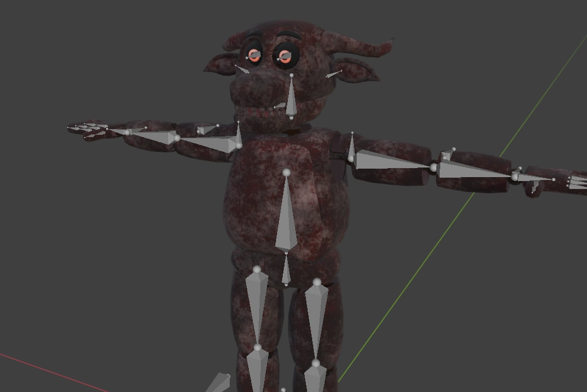
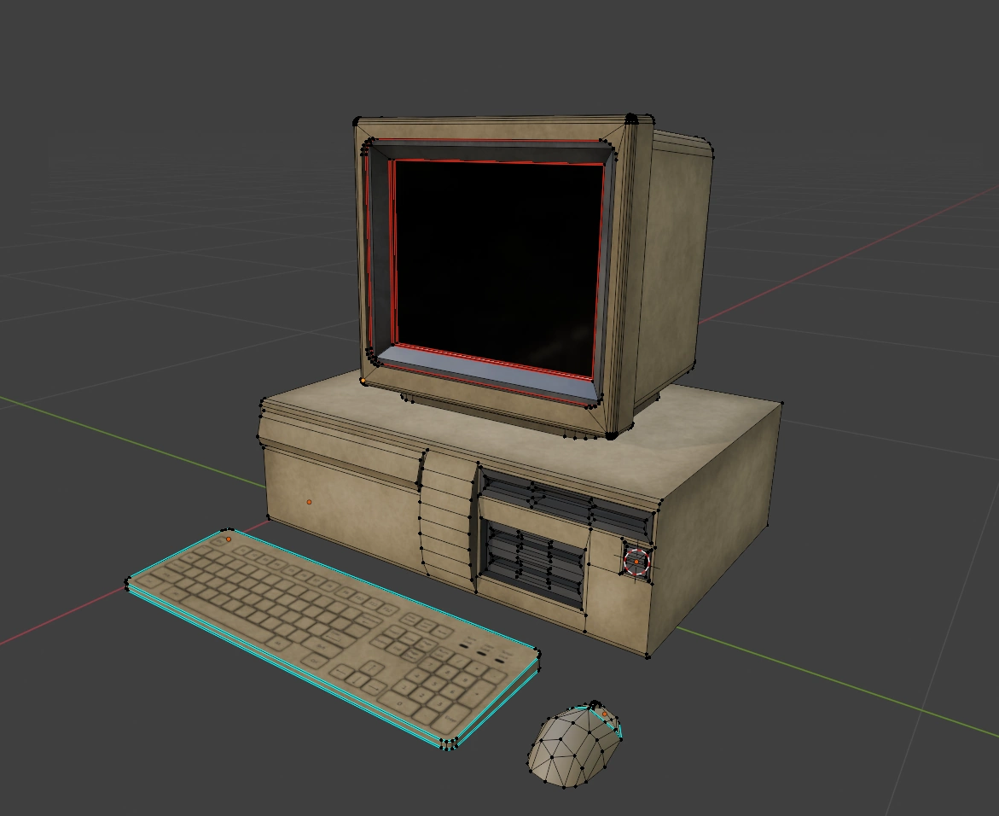
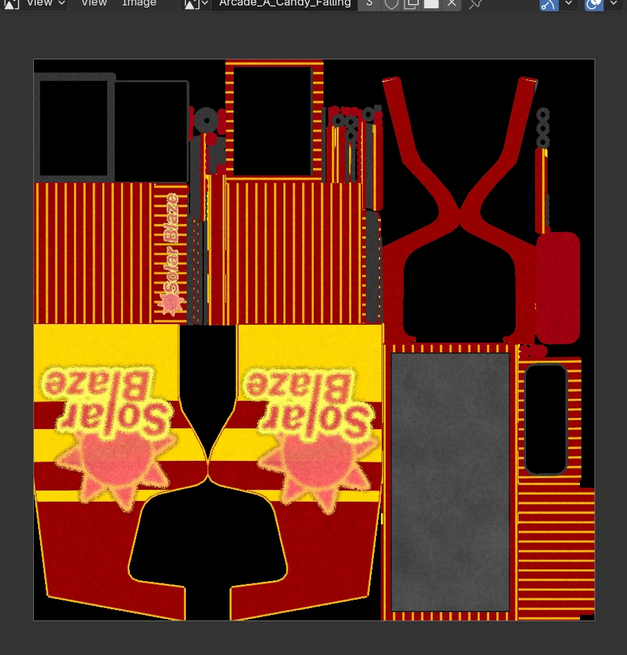
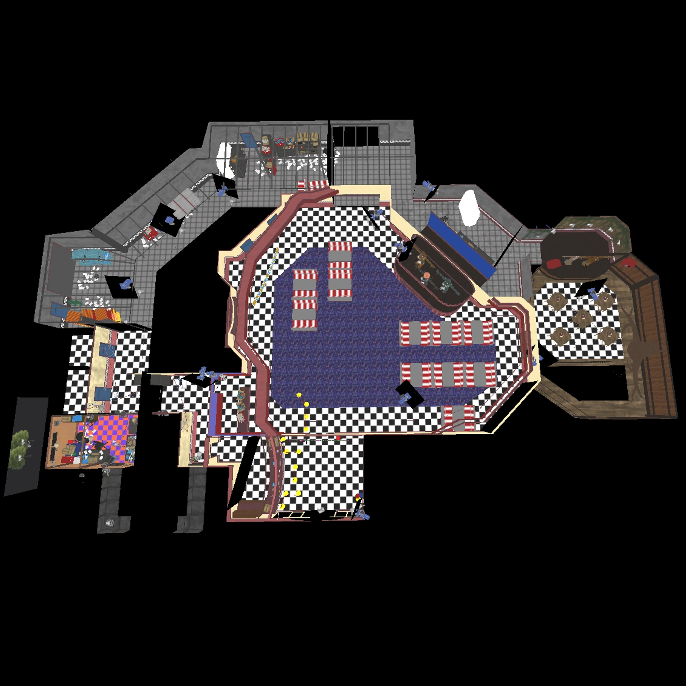
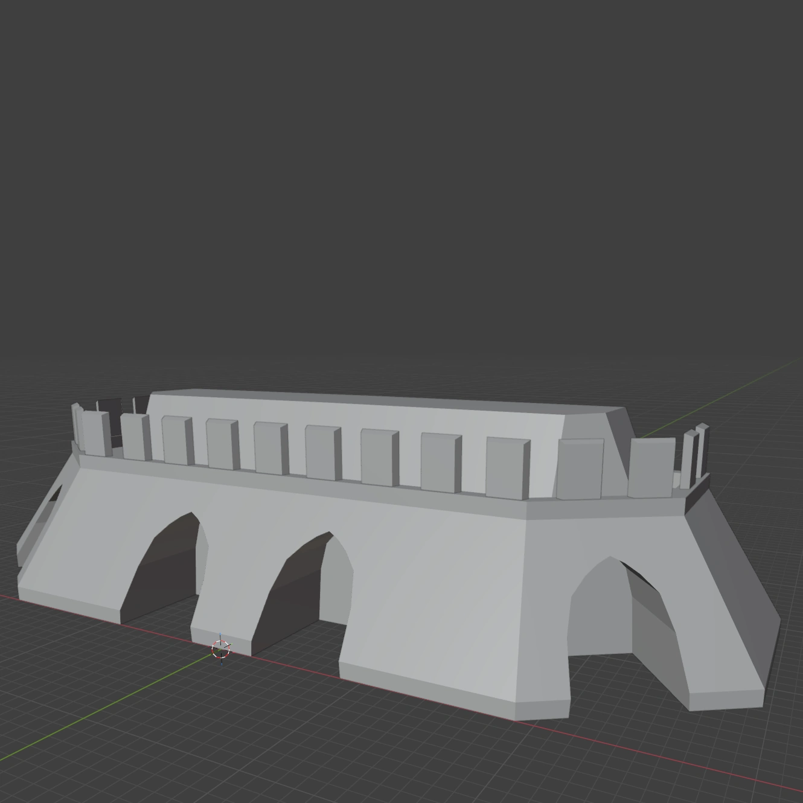

แกลเลอรีโมเดลวิดีโอเกม
รวมภาพผลงาน 3D Assets, Characters และ Environment ที่ใช้ในเกม
3D Modeling - ภาพ Render ของ Jackie Jaye นักข่าวจากเกม Project Zomboid
Blender - 27/3/2569

3D Modeling - รถยนต์รุ่นปี 1920s สำหรับเกม When The Dove Fell: Prologue
Blender - 11/10/2568

3D Modeling - หุ่นยนต์ไก่จากเกม Phattakhan Simulator: Prologue
Blender - 9/4/2568

Environment - บรรยากาศภายใน Dining Hall ในช่วงแรกของการพัฒนาวิดีโอเกม Phattakhan Simulator: Prologue
Unreal Engien 5 - 20/3/2568

3D Modeling - หุ่นยนต์ควายจากเกม Phattakhan Simulator: Prologue
Blender - 29/6/2568

3D Modeling - โมเดลคอมพิวเตอร์ตั้งโต๊ะจากเกม Phattakhan Simulator: Prologue
Blender - 12/3/2568

3D Modeling - ภาพ Texture ของตู้เกมที่เป็นวัตถุประกอบฉากภายในเกม Phattakhan Simulator: Prologue
Blender - 21/5/2568

Environment - แผนที่มุมสูงของร้านอาหารจากวิดีโอเกม Phattakhan Simulator: Prologue
Unreal Engien 5 - 2/6/2568

3D Modeling - กำแพงกรุงศรีอยุธยาจากวิดีโอเกม Your Caravan Awaits: Prologue
Blender - 17/3/2569